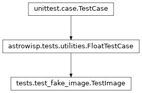

tests.test_fake_image module
Class Inheritance Diagram

Unittest test case for the astrowisp.fake_image.image.Image class.
- class tests.test_fake_image.TestImage(methodName='runTest')[source]
Bases:
FloatTestCaseMake sure the Image class functions as expected.